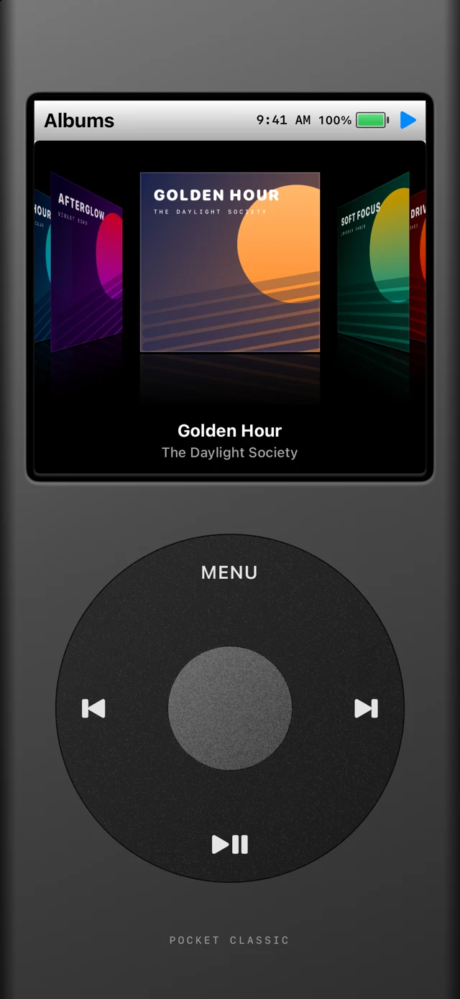
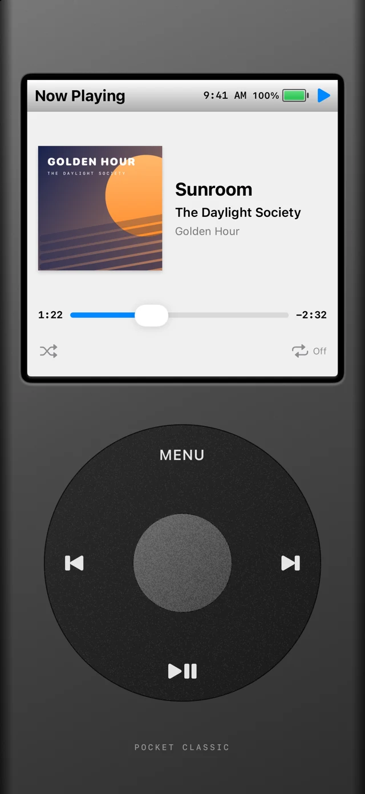
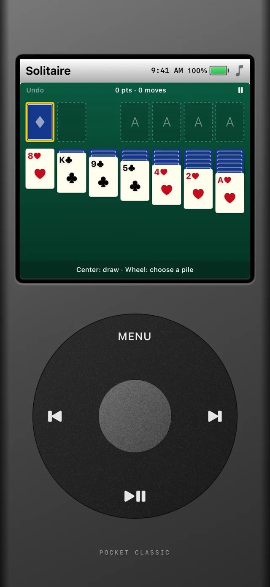
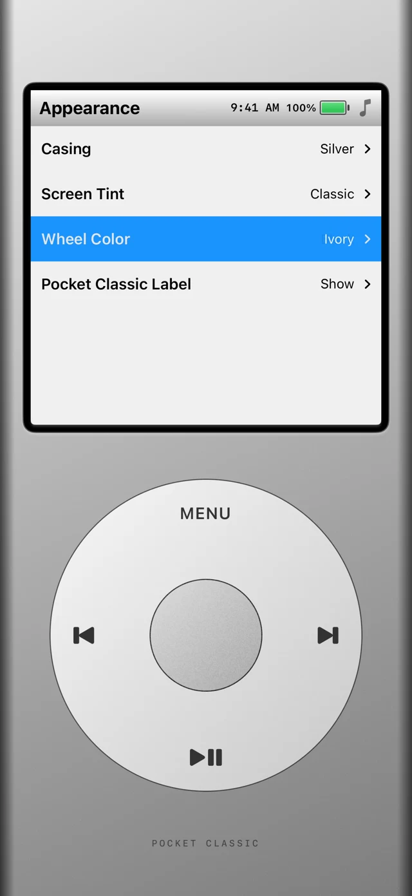

01 / YOUR LIBRARY
Let the albums lead.
Browse songs, albums, artists, and playlists. Turn the wheel through a reflective album carousel, with animated artwork previews along the way.

Made for your music
Bring a little nostalgia to your everyday listening. Pocket Classic puts your Apple Music library inside a player that feels like an old favorite.
Take a closer lookFor iPhone · Works with your Apple Music library

The good stuff, all here
A familiar way to find a favorite, rediscover an album, or lose yourself in the next track.
Browse songs, albums, artists, and playlists. Turn the wheel through a reflective album carousel, with animated artwork previews along the way.

Take a break with Solitaire or Brick Breaker. Two familiar games, built right into the player and designed around the wheel.

Choose your casing, wheel color, and screen tint. Fine-tune the controls and decide how the time, battery, and player label appear.

Screens show fictional music and original demo artwork. Library access permission is required. Streaming Apple Music catalog tracks requires an active Apple Music subscription.
Say hello
For support, feedback, or privacy questions, get in touch with the developer.
ian.dorosh@outlook.comIf you’re reporting an issue, include your iPhone model, iOS version, and what happened. Please don’t send passwords or payment details.
The details
Effective November 3, 2026
This policy explains how Pocket Classic, developed by Velf Creations, handles information when you use the iPhone app or this website.
With your permission, Pocket Classic uses Apple’s MusicKit framework to access your music library, including song, album, artist, playlist, and artwork information. The app uses this information to display your library and play the music you select. Library information is processed in the app; it is not sent to servers operated by the developer.
Library access, subscription checks, artwork delivery, and playback may involve requests to Apple’s services. Apple handles those requests under its own Apple Music privacy notice and privacy policy. Pocket Classic does not receive your Apple Account password or payment information.
The app saves appearance and control preferences, Solitaire progress, and the Brick Breaker high score locally on your device. It reads the device’s time, battery status, and orientation to display and arrange the player. These device readings are not sent to the developer.
Pocket Classic does not require a separate developer account and does not include advertising, third-party analytics SDKs, or cross-app tracking. The developer does not sell or rent your personal information. Apple may separately collect usage or diagnostic information according to your device settings and Apple’s policies.
If you email the developer, your email address, message, and any attachments are used to respond to your request and provide support. Email is handled by the developer’s email provider, Microsoft Outlook. Support correspondence is kept as needed to address the request and related follow-up, or to meet legal obligations. You can request deletion of your correspondence by emailing the address below.
This page does not use analytics scripts, advertising trackers, cookies, or browser storage. Fonts and images are served with the site, and there are no embedded third-party players or contact forms.
When this site is hosted on GitHub Pages, GitHub processes technical information about visits, such as IP addresses and request information, to provide and secure its hosting service. See the GitHub privacy statement. Following an external link or sending an email is subject to the destination service’s policies.
You can revoke music library access in your iPhone’s Settings under Privacy & Security → Media & Apple Music. The app’s Reset Appearance & Controls option resets those preferences. Deleting the app removes its local app data from the device; device backups are managed separately by Apple and your backup settings. Revoking access limits music features but does not delete your Apple Music library.
This policy may be updated when the app or its information practices change. The current version and its effective date will be posted on this page.
For questions about this policy or your support correspondence, contact Velf Creations at ian.dorosh@outlook.com.